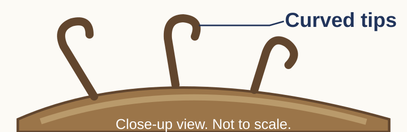

Where are you stuck?
Try the task first. Choose a card for the part you need help with. Write in your book. Then try the new question with less help. Keep the tools you normally use.
Remember the flower
Feature: which part can you see?
Look at the lettered flower. Find the tip that holds pollen. Name the tip and its stalk in your book.
Try again: find the surface that receives pollen. Return to the lesson. Rotate the flower first if the controls are available.Use the flower diagram from your task booklet.
Example answer and checks
Tip and stalk
The anther holds pollen. The filament is the stalk that supports it.
Find the pollen-receiving surface
The stigma receives pollen. It is above the style.
Success criteria
- I find the part before naming it.
- I can find the stigma and explain that it receives pollen.
Mechanism: what does each part do?
Anther → ______
Stigma → receives ______Complete the gaps in your book.
Try again: which part contains ovules? Give its function.
Example answer and checks
Complete the gaps
Anther → makes/contains pollen. Stigma → receives pollen.
Try another part
The ovary contains ovules. After fertilisation, it develops into the fruit.
Success criteria
- I match each part to its function.
- I explain which part contains the ovules.
Feature: seed or fruit?
Ovary → fruit
Ovule → ______Fill the gap in your book.
Try again: a fruit has several seeds. Which flower part did each seed come from?
Example answer and checks
Complete the gap
After fertilisation, an ovule develops into a seed.
Try the fruit
Each seed developed from an ovule. The fruit around the seeds developed from the ovary.
Success criteria
- I link ovule to seed and ovary to fruit.
- I use the same links to explain a fruit with several seeds.
Limit: what does pollen show?
Pollen transfer → pollination
Gametes join → ______Write the missing word in your book.
Try again: pollen is on a stigma. Does this prove fertilisation? Explain.
Example answer and checks
Complete the gap
Fertilisation happens when male and female gametes, or sex cells, fuse. Fuse means join together.
Try the observation
No. Pollen on a stigma shows that pollination has happened. It does not show that the male and female gametes have fused.
Success criteria
- I explain fertilisation correctly.
- I say what the pollen shows and what it cannot prove.
Explain how seeds and fruits move
Feature: name one detail in your book

Example answer and checks
Model response
The fruit has stiff hooks with curved tips. I can see their shape. I still need to explain how the hooks help the fruit move.
Success criteria
- I name a feature I can see.
- I explain what I can see without guessing what must happen.
Feature: try a different fruit
A fruit has a soft, fleshy wall and seeds inside. Which statement describes its structure?
A · It has a fleshy outer wall.
B · Every seed will survive after being eaten.
Write A or B in your book. Explain your choice.
Example answer and checks
Model response
A describes the structure. B is a guess about what will happen later. Not every eaten seed survives.
Success criteria
- I choose the statement about the structure.
- I explain why this description cannot tell us that every seed survives.
Mechanism: how does it move?
Hooks → ______ → animal carries fruitComplete the gap in your book.
Try again: return to the lesson. Hide the help.cover the help above. Explain how a wing helps a different fruit move.
Example answer and checks
Complete the gap
Hooks catch on fur. The moving animal then carries the fruit.
Try the winged fruit
A wing helps a light fruit stay in the air. Moving air can carry it.
Success criteria
- I link the feature to how movement happens.
- I explain the different fruit after closing the help card.
Benefit: why might this help?
Less competition for ______ → better chance of growthFill the gap in your book. Explain the link.
Try again: a seedling grows away from crowded leaves. Why might it get more light?
Example answer and checks
Complete the link
Young plants may face less competition for water. Getting more water can improve their chance of growth.
Try a different resource
A seedling away from crowded leaves may be less shaded. It may face less competition for light. More light can help photosynthesis and growth, but survival is not certain.
Success criteria
- I name a resource the plant needs.
- I explain how less competition for it may help growth.
Limit: what if something changes?
No animal contact → hooks catch less / more?Explain in your book.
Try again: return to the lesson. Hide the help.cover the help above. Air around a winged fruit stops moving. How might the fruit move?
Example answer and checks
Change animal contact
Without a suitable animal touching it, the fruit is less likely to catch on fur and be carried away.
Try moving air
Without moving air, the fruit is not carried sideways by wind. It may still fall or move another way.
Success criteria
- I change one condition while keeping the fruit the same.
- I explain how movement may change. I do not say all movement must stop.